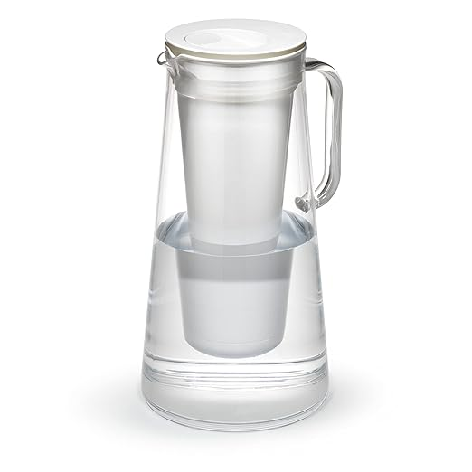
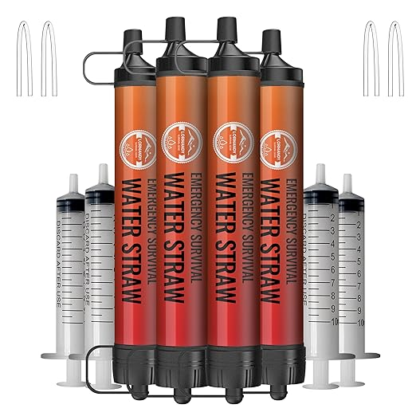
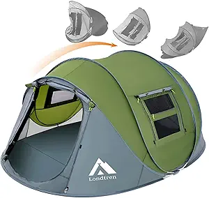

A lot of folks in the survival world turn their nose up at buying survival gear on Amazon. You know the type — the “gear snobs” who swear they only order from obscure tactical outfitters in the back of a ’99 gun magazine, as if that makes their compass more accurate or their tent more waterproof. Then you’ve got the basement hoarders — shelves stacked with thousands of dollars in untouched kit — who are 300-pound diabetics and couldn’t hike a mile if their life depended on it. They’ll lecture you on “proper preparedness” while wheezing halfway to the mailbox.
The truth? None of that matters if you’ve never put the gear to work. In a real emergency, nobody cares where your stuff came from — they care if it works, if you know how to use it, and if it’s close enough to grab when things go bad.
That’s why I buy a lot of my prepping and survival gear on Amazon. It’s fast. It’s reliable. I can get exactly what I need without waiting three weeks for some “elite” brand to process my order like they’re forging it from dragon steel. I also like that I can read hundreds (sometimes thousands) of honest reviews and see real ratings before I spend a dime — which means other people get to test the quality before I do. If something breaks, I send it back with a couple clicks. If something works, I buy more.
You don’t have to worship at the altar of overpriced specialty shops to be prepared. Half the gear that’ll keep you alive can be on your doorstep tomorrow, often for less than the tacti-cool brands want for the same thing with a logo slapped on it. I put this list together to make the process as simple and straightforward as possible. A cheat-code-esque quick start for anyone serious about prepping for their family’s future. These are items I personally use, trust, and recommend, because they’ve proven themselves where it matters most.
Solar Input
BLUETTI PV200 200W Foldable Solar Panel
The BLUETTI PV200 delivers 200 watts of reliable solar charging in a lightweight, foldable design that’s perfect for off-grid living, camping, and emergency preparedness. High-efficiency monocrystalline cells convert sunlight into clean power to keep your solar generators, power stations, and devices topped off anywhere. Weather-resistant, portable, and easy to set up — your ticket to free, renewable energy without relying on the grid or noisy gas generators.
Use cases: off-grid recharging, long outages, van life.
Light + Backup
Goal Zero Lighthouse 6000-Lumen Multi-Functional Adjustable Light
The Goal Zero Lighthouse 6000 is a rugged, USB-rechargeable lantern designed for camping, outdoor events, and emergency preparedness. Featuring adjustable 6,000-lumen brightness, a built-in hand crank for off-grid power generation, and up to 48 hours of runtime, it’s ready for blackouts or backcountry nights. Doubles as a power bank to charge phones and small devices, making it an essential addition to bug-out bags, RV setups, or home emergency kits. Built tough to survive the elements — because darkness shouldn’t stop you.
Use cases: blackout lighting, car kit, base camp, outdoor events.
Hands-Free
Black Diamond Storm 500-R Headlamp
The Black Diamond Storm 500-R Headlamp is a waterproof, USB-rechargeable powerhouse built for serious outdoor use. With 500 lumens of brightness, multiple beam settings, and red night vision mode, it cuts through darkness for hiking, camping, hunting, or emergency repairs. Its rugged, weather-sealed design thrives in rain, snow, and dust, making it an essential tool for survival kits, bug-out bags, and everyday carry. When night falls, this headlamp keeps you moving — and keeps wildlife at a respectful distance.
Use cases: night repairs, rain hikes, power outage.

Water On-The-Go
LifeStraw Home – 10-Cup Water Filter Pitcher
The LifeStraw Home is a sleek, BPA-free 10-cup water filter pitcher designed to provide everyday protection against harmful contaminants. It removes bacteria, parasites, microplastics, lead, mercury, PFAS, and a variety of chemicals—while improving taste and clarity. Perfect for home, office, or RV use, it’s an easy, reliable way to ensure safe, great-tasting water for you and your family every day.
Use cases: home water safety, everyday hydration, chemical protection.
Tiny Tank
Sawyer MINI Water Filtration System
The Sawyer MINI is a lightweight, pocket-sized water filter capable of cleaning up to 100,000 gallons of water, removing 99.9999% of bacteria and protozoa. Versatile by design, it can be used as a straw, attached directly to standard water bottles, or integrated into a hydration bladder for hands-free filtering. Ideal for backpacking, emergency kits, and off-grid survival, it ensures safe drinking water from lakes, rivers, or questionable taps. At just 2 ounces, it’s one of the most trusted and field-tested water filters on the market.
Use cases: EDC, travel, backup to gravity systems.
Gravity Filtration
Yuclet Gravity Water Filter System
Hands-free, high-capacity filtration for camp or emergencies. Fill the hanging reservoir, clip it up, and let gravity push water through the inline filter into your clean container—no pumping required. Compact, lightweight, and easy to backflush, it keeps groups hydrated during outages, road trips, or off-grid stays.
Use cases: group camping, base camps, emergency water.
Storage
5-Gallon Stackable Water Storage Containers with Lids + Spigot – Easy Fill Survival Supply for Emergency Water Storage, Camping, Disaster Preparedness, RV Use (20 Gallon Total)
Durable, stackable, and built for serious preparedness. Each 5-gallon container includes a lid and spigot for easy filling and pouring. Perfect for keeping your family hydrated during emergencies, camping trips, or long-term off-grid living.
Use cases: hurricane prep, disaster readiness, RV water storage.
Long-Term Food
ReadyWise Emergency Food Supply – 90 Servings Organic Bucket, Protein Meals, Dehydrated & Freeze-Dried Survival Food for Backpacking, Camping Essentials & Prepping Supplies, Up to 25-Year Shelf Life
Just add water for ready-to-eat, nutrient-packed meals. With a 25-year shelf life, this 90-serving organic bucket is perfect for emergency storage, camping, or long-term prepping. Lightweight, easy to store, and built to keep you fueled when it matters most.
Use cases: power outages, camping, long-term storage.
Calories That Wait
Augason Farms 30-Day Emergency Food Supply
This all-in-one emergency food bucket packs a full month of survival nutrition into a compact, easy-to-store container. With a variety of hearty, shelf-stable meals, it delivers over 54,000 calories — enough to keep one adult fed for 30 days. Just add water, and you’ve got breakfast, lunch, and dinner ready in minutes. Perfect for bug-out bags, long-term storage, camping trips, or weathering power
Use cases: storms, layoffs, inflation hedging.
Boil Fast
Portable Camping Stove with Piezo Ignition
This compact but powerful camping stove is built for fast, reliable cooking in the wild. Featuring a built-in Piezo ignition, it sparks to life instantly — no matches or lighters required. The wide, stable base and wind-resistant design keep your flame steady, even in challenging conditions. Boils water in minutes, simmers meals evenly, and packs down small enough to slip into a backpack or bug-out bag. Perfect for camping, hiking, hunting, fishing trips, or as an emergency backup stove during pow
Use cases: backpacking, blackout coffee, storm cooking.

Drink Safely Anywhere
Straw Water Filter – 4-Pack Personal Water Purifiers
Compact, lightweight, and ready for any adventure, this 4-pack of straw water filters gives you safe drinking water wherever you are. Each filter removes harmful bacteria, protozoa, and microplastics, making it perfect for hiking, camping, fishing, travel, or emergency kits. No electricity or chemicals needed—just drink directly from the source or connect to a water bottle for clean, great-tasting water on demand. A must-have for survivalists, travelers, and anyone preparing for the unexpected.

Shelter
4 Person Easy Pop Up Tent – Waterproof Automatic Setup
This 4-person easy pop up tent offers instant setup in seconds, making camping and traveling hassle-free. Its waterproof design, dual doors, and durable construction keep you dry and comfortable in all weather. Perfect for family trips, hiking adventures, and festivals, it provides quick shelter without the struggle of traditional poles. Lightweight yet sturdy, it’s the ultimate grab-and-go camping solution.
Use cases: family camping, hiking, festivals, quick trips.